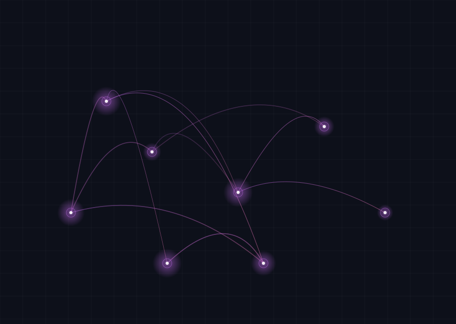
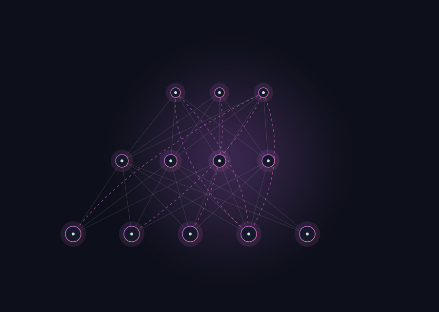
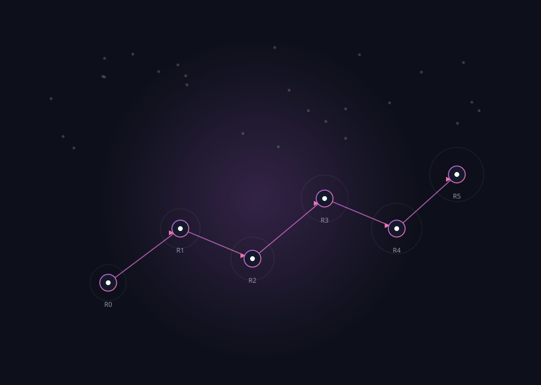
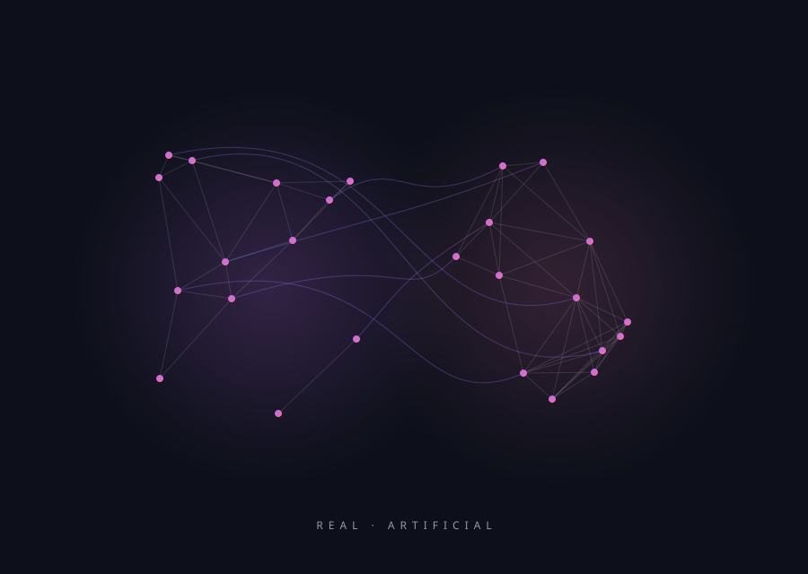

2020
National University of Defense Technology · College of Systems Engineering
XIN LU吕欣
Professor of Systems Engineering at the National University of Defense Technology, and co-founder of the Flowminder Foundation. I study human behaviour at scale — mobile data, complex networks, and the mathematics of disaster response.
198Publications indexed
39Collaborators
9Years of record
5Research programmes
Profile
A researcher of human behaviour, at scale.
Xin Lu is a professor at the College of Systems Engineering, National University of Defense Technology, and co-founder of the Flowminder Foundation. His work sits where big data, network science and public health meet.
For more than a decade he has turned anonymised mobile-phone records, satellite imagery and social-media traces into evidence that governments and humanitarian agencies can act on — from the 2010 Haiti earthquake and the West African Ebola outbreak to COVID-19 in China.
His research has appeared in Nature, PNAS, Nature Communications, Physics Reports and The Lancet Digital Health, and has been recognised by the NSFC Excellent Young Scholars fund, a GSMA GLOMO Award, and MIT Technology Review’s list of ten breakthrough technologies.
PhD Karolinska InstitutetBased in Changsha, ChinaLanguages 中文 · English
- Field
- Big data & network science
- Affiliation
- NUDT · College of Systems Engineering
- xin.lu.lab@gmail.com
- ORCID
- 0000-0002-3547-6493
Field notes
Science, in the field.
Data has a place. These frames are reserved for fieldwork, teaching and the people behind the papers — replace them with your own photographs when they are ready.

Add a photo
assets/img/gallery-01.jpg1600 × 1200 · JPG
Add a photo
assets/img/gallery-02.jpg1600 × 1200 · JPG
Add a photo
assets/img/gallery-03.jpg1600 × 1200 · JPG
Add a photo
assets/img/gallery-04.jpg1600 × 1200 · JPG
Add a photo
assets/img/gallery-05.jpg1600 × 1200 · JPG
Add a photo
assets/img/gallery-06.jpg1600 × 1200 · JPGResearch
Five programmes, one question.
How do human collectives move, connect and respond when the world changes abruptly? Each programme attacks a different layer of that problem — and they share data, methods and people.

01 / 05Reading populations in motion — before the statistics arrive.
Anonymised mobile-network records reveal where people go when a disaster displaces them. We turned this signal into operational evidence after the Haiti earthquake, Typhoon Mahasen, the Ebola outbreak and COVID-19 — helping agencies act while action still mattered.

02 / 05The architecture of who knows whom.
From degree assortativity to hierarchy entropy, we study the universal patterns that govern how networks grow and how information, behaviour and risk travel across them — including the weak ties that hold cities together.
03 / 05
Beyond pairwise edges.
Hypergraphs and simplicial complexes capture the group interactions that ordinary graphs flatten away. We build higher-order models of diffusion, random walks and infrastructure vulnerability — and the statistical tests that tell signal from structure.

04 / 05Counting the people surveys miss.
Respondent-driven sampling reaches hidden and hard-to-reach populations through their own networks. We analyse its bias, its variance and its limits — and build estimators that make network-based inference defensible.

05 / 05Testing policy in an artificial society first.
Agent-based artificial societies let us rehearse interventions — closing a city, seeding a network, allocating scarce care — before they touch the real world. We connect these simulations to mobility data and optimisation, toward a Pareto-optimal response.
Selected work
Papers that moved the field.
A short selection from 198 indexed publications, 2018–2026.
2012
2026
2023
2021
2025
Recognition
Honours & awards.
Work recognised by scientific societies, ministries and industry — and by the agencies that use it.
01
National Science Fund for Excellent Young Scholars
National Natural Science Foundation of China, 2015
02
GSMA GLOMO Award
Global Mobile Awards, 2016
03
10 Breakthrough Technologies
MIT Technology Review, 2013
04
National Teaching Achievement Award, Second Prize
Ministry of Education
05
Hunan Provincial Youth Science and Technology Award
Hunan Province
06
Natural Science Award, First Prize
Chinese Association for System Simulation
07
Science and Technology Progress Award, Second Prize
Ministry of Education
08
Higher Education Teaching Achievement Award, Special Prize
Hunan Province
In the press
Where the work travelled.
Coverage from the BBC, The New York Times, Scientific American, 人民日报 and 科技日报.
从0到1，这个团队用匠心打造“大数据管理与应用”系列教材
↗吕欣教授领衔编写《大数据平台架构》正式出版
↗Super large-scale mobility data reveals China's population mobility pattern
↗Chinese mobile data predicts COVID-19 spread
↗Collaborate
Let’s put data to work for people.
Open to research collaborations, visiting scholars, and students working on mobility, networks or humanitarian data science.